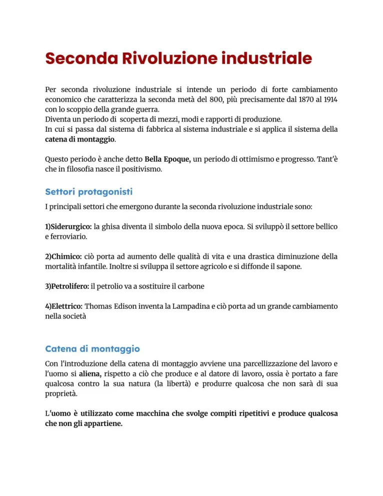
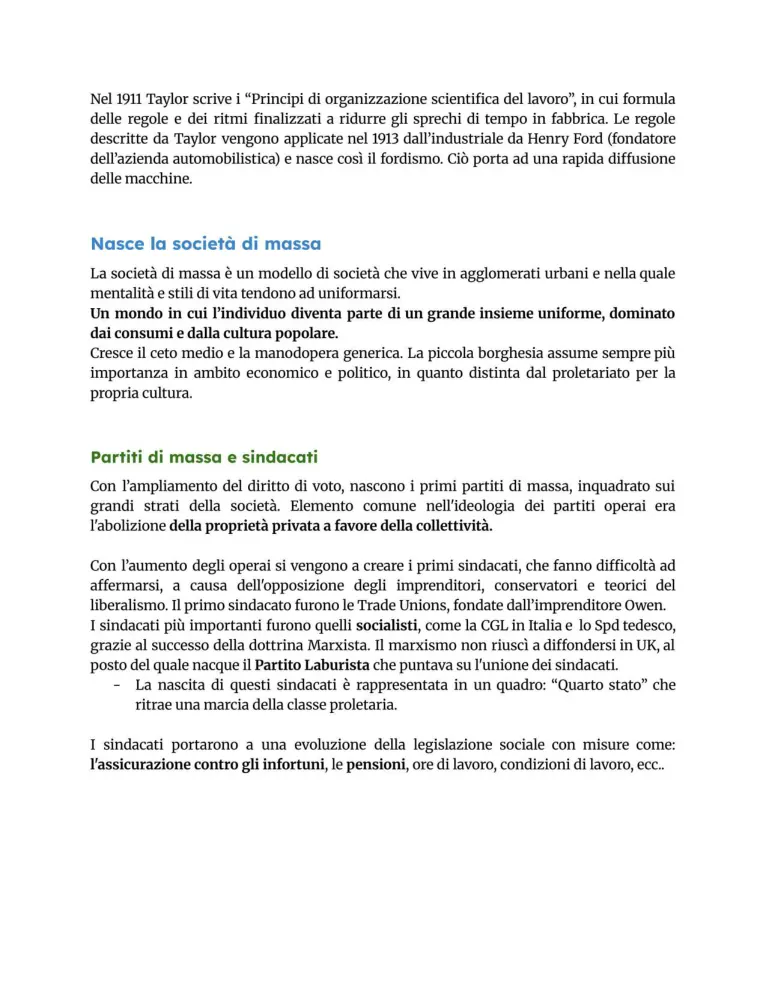
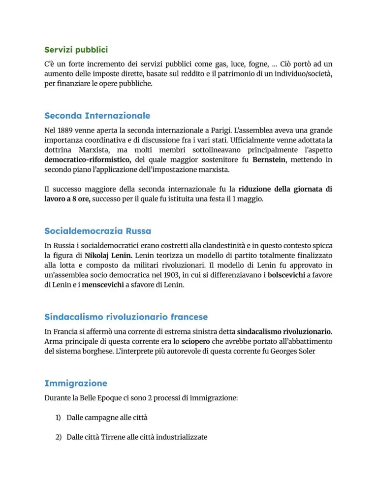
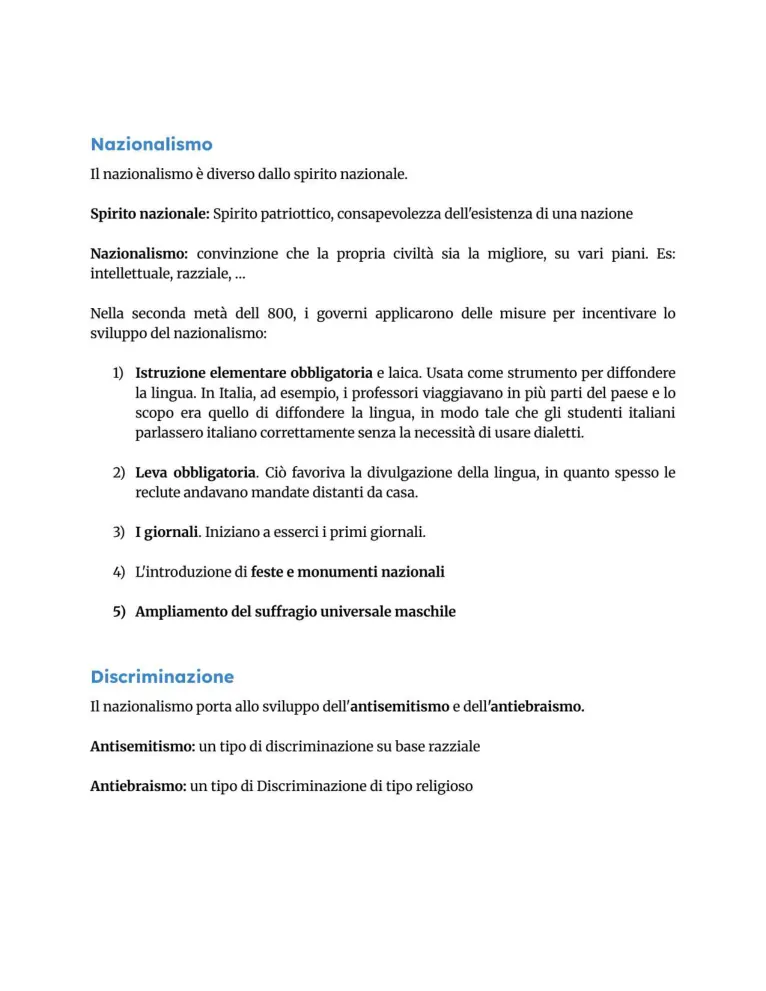
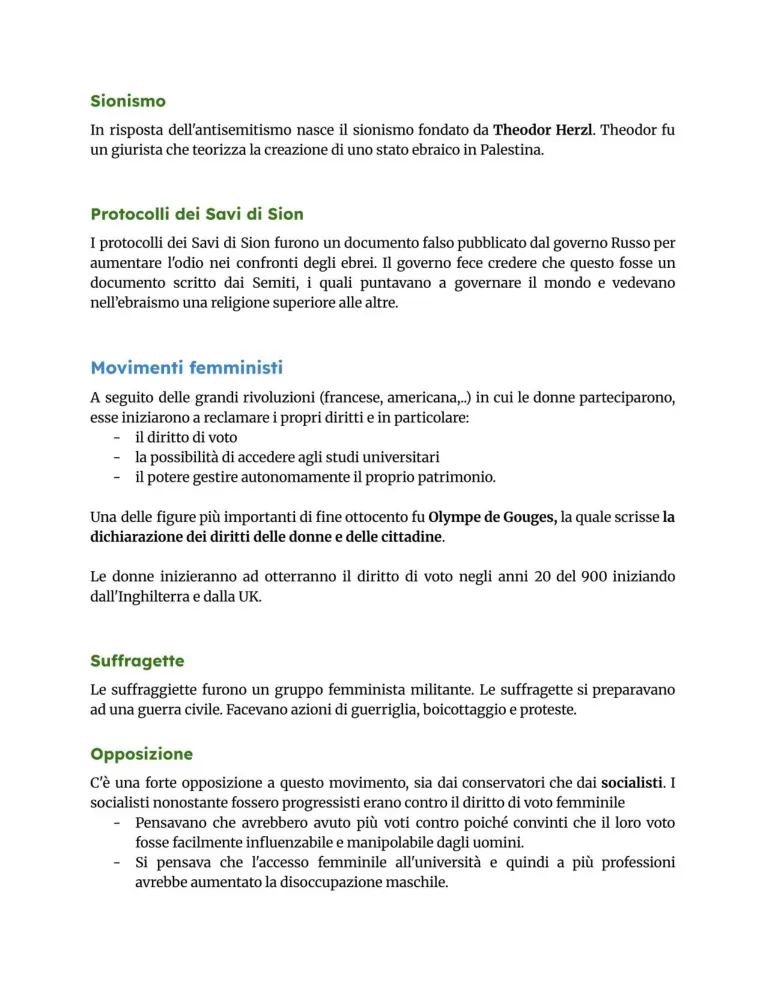
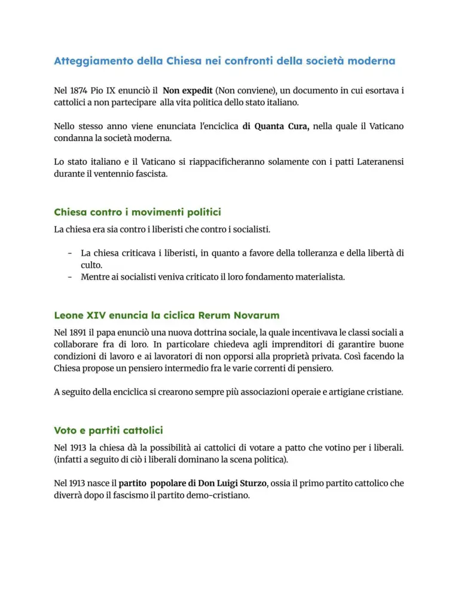
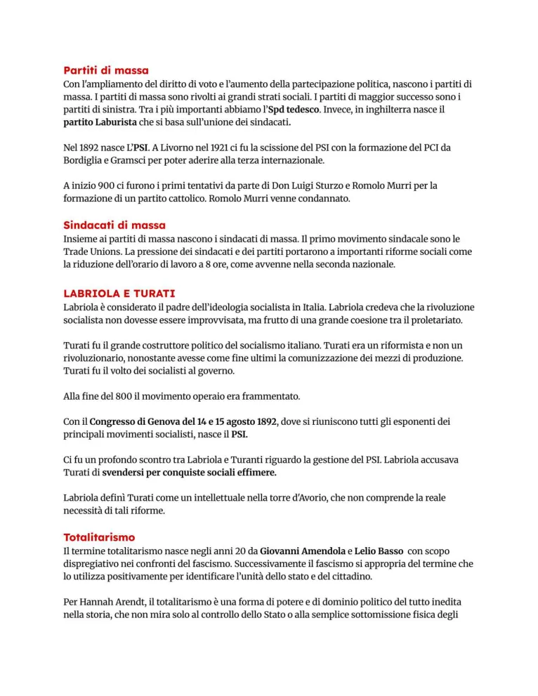

Seconda rivoluzione industriale e società di massa
Industria, catena di montaggio, capitalismo di massa, partiti, sindacati e nuove ideologie.
Studio guidato
Quadro generale
La seconda rivoluzione industriale riguarda soprattutto il periodo 1870-1914. Cambiano i mezzi di produzione, i settori industriali dominanti e il modo in cui il lavoro viene organizzato. La fabbrica moderna diventa il centro della produzione e la catena di montaggio porta a compiti ripetitivi e molto specializzati.
Settori protagonisti
I settori centrali sono siderurgia, chimica, petrolio ed elettricità. La ghisa e l’acciaio sostengono ferrovie e armi; la chimica incide su agricoltura, igiene e medicina; il petrolio sostituisce gradualmente il carbone; l’elettricità modifica produzione, città e vita quotidiana.
Taylorismo e fordismo
Il taylorismo studia scientificamente i tempi di lavoro per aumentare la produttività. Il fordismo applica catena di montaggio, standardizzazione e produzione di massa. L’operaio perde autonomia e ripete una singola mansione, mentre le merci diventano più economiche e diffuse.
Società di massa
Crescono città, alfabetizzazione, giornali, consumi, partiti e sindacati. Si affermano partiti di massa, socialismo, sindacalismo, cattolicesimo sociale e richieste di suffragio. La politica non riguarda più solo élite ristrette, ma coinvolge gruppi sociali sempre più ampi.
Ideologie e conflitti
Nazionalismo, imperialismo, razzismo e antisemitismo si diffondono accanto ai movimenti socialisti e cattolici. La Rerum Novarum di Leone XIII cerca una risposta cattolica alla questione sociale, mentre la Seconda Internazionale prova a coordinare i partiti socialisti europei.
Parole chiave
Pagine originali dal file
Le immagini sotto mantengono il riferimento diretto alle pagine del PDF usato come base del sito.







Quiz finale
Devi rispondere correttamente a tutte le 12 domande. Se ne sbagli anche solo una, il quiz si azzera e ricomincia da capo.